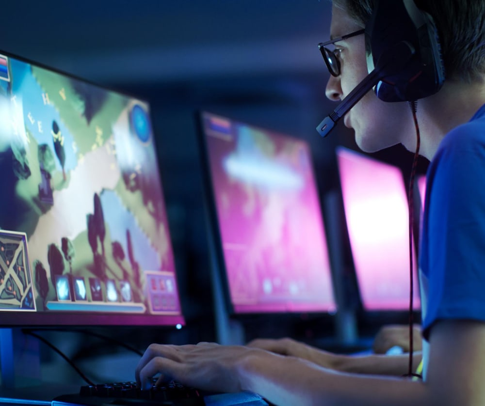

A continuacion les explicare conceptos basicos que debes saber si quieres ingresar en el mundo competitivo de los videojuegos.
Como con todo en la vida, es importante jugar todo tipo de juegos por razones obvios. Que te guste competir y así crecer como jugador y la sensación de contribuir a un equipo y una comunidad. .Los jugadores que estén motivados por el dinero, la fama y un éxito rápido, por otro lado, probablemente se agotarán antes de convertirse en profesionales. Que te guste el juego marcará una gran diferencia durante la práctica diaria a medida que adquieras las habilidades para convertirte en un profesional.
Lo siguiente es en encontrar algun juego que te guste. El valor que tiene escoger un juego que está establecido como Esport, todo esto con el fin de meterte al mundo competitivo. Los títulos de Esports mas famosos son League of Legends, Dota 2 y CounterStrike: Global Offensive (CS:GO) tienen bases de jugadores dedicados y, por extensión, torneos patrocinados con premios lucrativos. Cuando un juego es emergente, los jugadores tienen la oportunidad de ayudar a escrutar el juego y hacer avanzar el meta, que tiende a ser más volátil y a dar cabida a diferentes estilos de juego al comienzo. El consejo es que pruebes varios y te quedes con el que verdaderamente te guste.
El gaming profesional se trata tanto del talento individual como de la cultura, pero antes de invertir tu tiempo de aprender detalles de un juego en específico, primero debes de encontar algun foro sea Discord , Steam o otras redes que te puedan servir a comunicarte con otra gente asì cada uno puede dar distintas opiniones o experiencias. Tambien debes de disfrutar de la compañía de otros jugadores. De esta manera, puedes captar los aspectos más detallados del meta de un juego.
Primero, debes de dominar las mecanicas del juego.Concentrate en adquirir las habilidades específicas para el juego hasta que te lo sepas de memoria. Ya que todo esto unicamente se trata de habilidad y de haber estudiado cada concepto basico del juego que estes jugando asì como la optimizacion de FPS , apartado grafico y configuracion de los controles para que este sea de tu agrado, así no tengas dificultades. Mientras pules tus habilidades, debes comenzar a investigar la estrategia principal del juego. Un buen Esport tiene muchos niveles de estrategia, que van de diferentes puntos de vista como por ejemplo: una estrategia situacional, como el rol de un jungler que acecha entre las líneas, hasta el meta de nivel superior. Comprender tu rol en una situación dada es un buen punto de partida, dado que el meta utilizado por los profesionales.
Volverse bueno en el juego es solo la mitad de la batalla. La otra mitad es poder establecer las conexiones que te ayuden a ascender con tu trayectoria competitiva. Cuando hayas encontrado un lugar en un espacio mas competitivo,debes de empezar a generar redes de contactos. Aprovecha tu posición como oponente de calidad para conectarte con mejores jugadores. Debes de establecer relaciones con mejores jugadores puede dar lugar a mejores cosas, como invitaciones a canales de Discord privados, donde tendrás la oportunidad de jugar en partidas amistosas exclusivas y codearte con jugadores de elite. Es en entornos como estos que las organizaciones profesionales suelen notar a los jugadores.
Esto seria todo lo esencial que debes de conocer para comvertirte en un buen jugador profesional o piensas entrar al mundo competitivo, espero que esta información te haya ayudado.